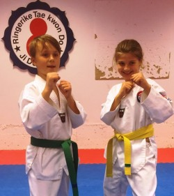

Arrangement
Gradering Barn.

Gradering for barn blir 21.juni. Dette blir også sesong avslutning for barne gruppen. Vi starter opp klokken 18.15 og forventer å være ferdig ca klokken 2030. Graderingen koster kroner 350 og inkluderer nytt belte/stripe og diplom.
Påmelding gjøres under treningen den 12.juni. Påmeldigen er åpen fra 1800-1915. Det kan betales med kontant, kort og vips.
Det vil legges til rette for en enkel kiosk med vaffel og kaffe og noen TKD effekter.
Om noe er uklart, så ta kontakt med instruktørene eller send en e-post til post@arkiv.ringeriketkd.no
Styret.